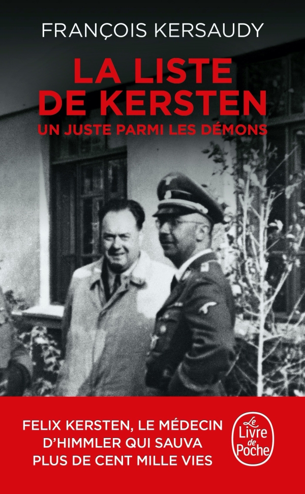

Felix Kersten, le masseur du IIIe Reich
Aujourd’hui, grâce à Steven Spielberg, Oskar Schindler et son histoire
sont connus par un bon nombre de personnes.
Alors pourquoi n’avez-vous jamais entendu parler de
Felix Kersten alors qu’il a permis le sauvetage de
plus de 100 000 personnes pendant la seconde guerre
mondiale ? Peut-être parce que son histoire n’a pas été adaptée au
cinéma, peut-être parce que son mérite a été attribué à d’autres ou
peut-être parce qu’il a été considéré comme un collaborateur en raison
de ses relations avec un des plus grands criminels nazis : Heinrich
Himmler.
Mais c’est en soignant les maux de ventre de ce dernier qu’il a pu
sauver tant de vies.
En 1939, alors que la guerre s’installe en Europe, le masseur-thérapeute
Félix Kersten, d’origine finlandaise, est sollicité auprès d’Heinrich
Himmler, chef absolu de la SS et responsable entre 1931 et 1942 des
camps de concentration et d’extermination. Il souffre depuis plusieurs
années de douleurs chroniques généralisées que la morphine ne peut
apaiser. Mais les massages de Kersten le peuvent.
Commence alors un traitement de plusieurs années. Les honoraires du
médecin sont élevées et Heinrich Himmler n’a pas assez d’argent pour
s’offrir ces soins. Cependant, le masseur accepte de l’aider pour un
coût bien inférieur au prix habituel. En échange, il espère que Himmler
pourra peut-être faire un petit geste pour ses amis, arrêtés par la
Gestapo. Alors qu’il est appelé à entrer sous les drapeaux, le
gouvernement finlandais l’autorise à continuer ses soins en échange de
renseignements, et lui transmet de temps à autres des listes d’amis à
sauver.
Commence alors une suite de rendez-vous durant lesquels le massage d’un
grand officier du IIIe Reich devient, pour Felix Kersten, le moyen de
sauver des vies . Libérer quelques amis des griffes de
la gestapo n’était déjà pas une mince affaire, mais obtenir la
libération de 3000 femmes devient un vrai défi. Au début de l’année
1945, il réussit à ce qu’un convoi de 2700 juifs promis aux chambres à
gaz soit dérouter vers la Suisse qui les accueille.
En 1945, alors que les alliés vont bientôt découvrir les camps de la mort, Hitler a ordonné de faire disparaitre les camps de concentration si l’ennemi approche. Kersten permet l’extraction de plus de 15 000 prisonniers vers le Danemark et la Suède avec l’aide de la croix rouge et de ses 120 bus blancs. Mais ce qui est encore plus surprenant, c’est le « Contrat au nom de l’humanité » que le docteur fait signer à son patient. Il y est question de rendre les camps intacts aux alliés. Ce document permet de sauver au moins 60 000 juifs.
Mais les exploits de Felix Kersten ne sont pas reconnus au sortir de la
guerre. C’est le neveu du roi de Suède,
le comte Bernadotte qui s’en attribue les mérites et
qui menace le médecin de le faire expulser s’il parle. De toute façon,
qui croirait un homme qui a soigné un assassin ? Le comte écrira ses
mémoires qui le rendront mondialement célèbre. Il est récompensé de
toute part alors que Felix Kersten n’a plus de client et se retrouve
donc sans le sou. Il a financé avec ses propres économies la libération
de plusieurs prisonniers.
Il faudra attendre plusieurs années pour que certaines personnes se
rendent compte de la supercherie et que Felix Kersten soit reconnu comme
l’auteur de ces nombreux sauvetages. Grand officier de l’Ordre
d’Orange-Nassau aux Pays-bas, Chevalier de la légion d’honneur en
France, Medizinalrat en Finlande, nominé 8 fois pour le prix Nobel de la
paix, il n’est pourtant pas reconnu comme Juste parmi les nations.
Publié en 2021, le livre « La liste de Kersten » de l’historien François
Kersaudy retrace sa vie en s’appuyant sur des témoignages et des
documents d’archives.
C’est en lisant ce livre que j’ai découvert cet incroyable récit. Ce
récit qui raconte la guerre, le danger mais surtout ce récit qui raconte
la vie. La vie d’un homme qui a sacrifié une partie de la sienne pour en
sauver des centaines de milliers d’autres. Cet homme qui a préféré se
taire pendant qu’un autre s’attribuait ses mérites. Mais surtout cet
homme remarquable qui n’a pas hésité à sauver encore et encore, des
personnes de toutes les nationalités, de tous les âges, de toutes
confessions religieuses. Car une vie est une vie.
Felix Kersten a sauvé les autres, au péril de sa vie. Il fait partie de ces personnes que nous ne devons pas oublier et dont il est important de parler. Il fait partie des héros de l’ombre qui pendant la seconde guerre mondiale ont sauvé des vies. La phrase gravée sur les médailles que l’on remet aux Justes parmi les Nations le dit si bien : « Quiconque sauve une vie, sauve l’Univers tout entier ».
